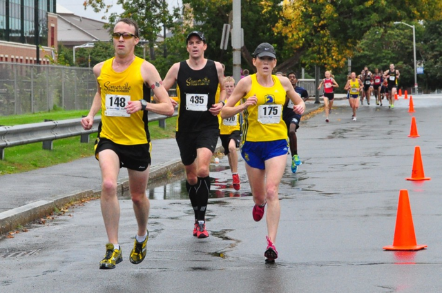

{% mark excerpt -%}
*  **Goal:** None
*  **Result:** 17:50

There are 9 weeks between the Quebec City Marathon and the Cape Cod Marathon. After Quebec I decided to take a shot at 
running a fast time in Cape Cod. To add a little twist to the delicate balance of recovery and build-up, I had 3 other 
races scheduled in that interval. A 5K, a half-marathon, and a 3 miler. The Jack Kerouac 5K in Lowell, MA was the first 
of these challenges.
{%- endmark %}


I was more than a little conflicted heading to the starting line. Sure that I was in sub-18 shape and that the fast 
USATF Gran Prix field flat simple loop course would make this a quick one yet weary that pushing to hard could mean 
disaster for my Cape Cod plans. With that in mind I lined up fairly well back in the pack with Jesse, Tim M., Tim H., 
and Tom B. This solved the problem of having the USATF speedsters pull me along to some kind of opening 2:40 800m and 
spectacular implosion. Instead we opened with a tightly packed mass of slow moving elbows. I stayed to the right near 
Tim H. and we made our way through the crowd in due time. At around the half mile we were running in open space. Once we 
reached the other side of the river before the one mile mark I could see down the road to several similarly paced 
teammates who hadstarted further ahead of us. Including my Pub Series pacing partner / nemesis, 13 year old Daniel O.  

At the 1 mile Tim H. and I were still running side by side. I heard, my GPS watch beep and looked down to see a 5'41'' 
split. "Holy shit," I gasped. This thing was on. I only know of two mid race strategies for the 5K. "Run harder" and 
"Quit." In a distance this short there is not room for much else. Harder it was. The mile 2 split came before I knew it. 
5:48. "Harder" doesn't always mean "faster." Just after the 2 mile, still running with Tim, there was a pretty sizable 
downhill. Weighing in at 190+, Tim has the advantage of gravity of the downhills. I expected this would be where he 
pulled ahead and I faded away. And then he didn't. 

Just before the last turn I pulled up to Daniel. As I passed him I encouraged him to come along but he was already 
giving all he had (and still came in at 17:59 with a huge PR). I came down the final straight looking at 17-something on 
the clock. Last mile 5:42. No apparent injuries. Also, a bunch of Pub Series points to move me into 10th overall in the 
series. Success.



